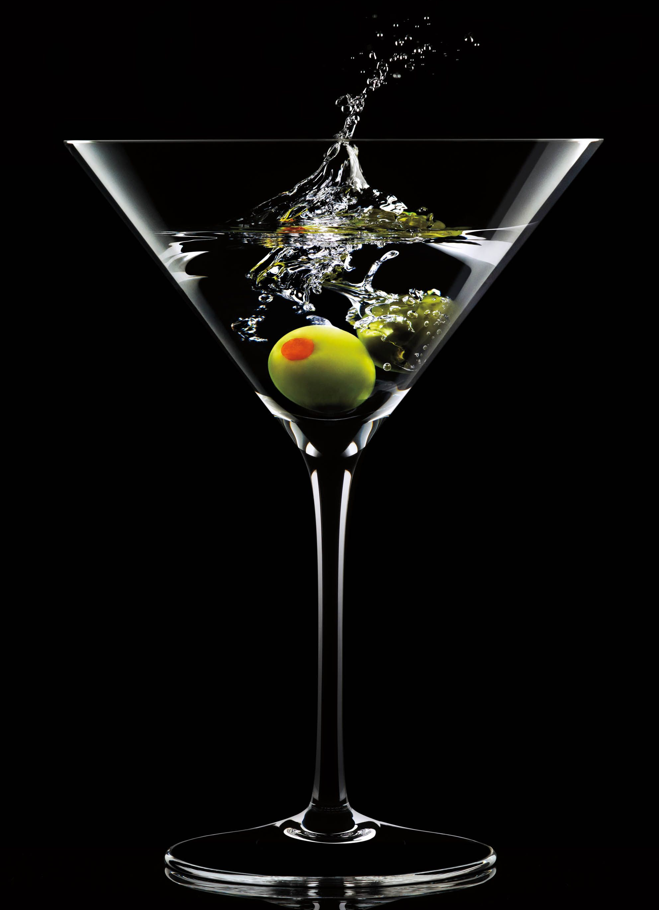

Dry Martini

Ingredientes:
60 ml de gim seco
15 ml de vermute seco
Gelo
Casca de limão ou azeitona para decorar (opcional)
Modo de preparo:
Encha uma coqueteleira com gelo até a metade.
Adicione o gim seco e o vermute seco na coqueteleira.
Agite vigorosamente a coqueteleira por cerca de 15 a 20 segundos para resfriar e misturar bem os ingredientes.
Pegue uma taça de martini e passe a casca de limão ao redor da borda da taça para liberar os óleos essenciais do limão.
Se preferir, coloque uma azeitona no fundo da taça.
Despeje o conteúdo da coqueteleira na taça, usando uma peneira para evitar que o gelo caia na taça.
Sirva imediatamente e aproveite seu dry martini!
Lembre-se de que o dry martini é um coquetel que permite variações pessoais. Alguns preferem uma proporção maior de gim para
vermute, enquanto outros preferem menos vermute para um sabor mais seco. Sinta-se à vontade para ajustar a receita de acordo
com suas preferências pessoais.